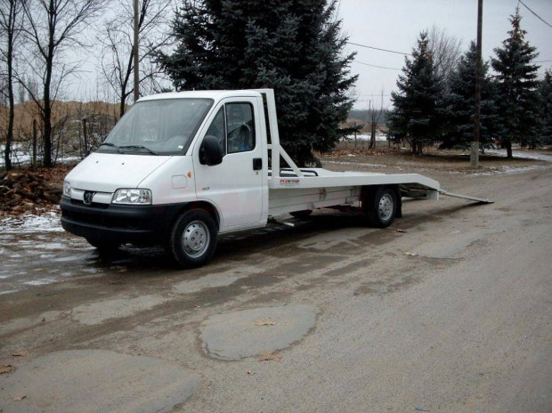

Valós idejű állapotkövetés és gyors kapcsolatfelvétel.
A ResQ egy autómentő platform, ahol térképen választhatsz szolgáltatót, követheted a mentés állapotát, és közvetlenül üzenhetsz az autómentőnek.

Valós idejű állapotkövetés és gyors kapcsolatfelvétel.
GPS vagy kézi cím alapján meghatározzuk, honnan induljon a mentő.
Látod az adatokat, várható érkezést és a becsült díjat.
Állapotfrissítés, üzenetküldés, majd értékelés a mentés végén.
A mentés lezárása után csillaggal és szöveggel is visszajelezhetsz.

Jármű típusa, hiba rövid leírása, pontos helyszín és célcím.

Defekt, lerobbanás, akkumulátorhiba vagy vontatás esetén.

Forgalmas úton állj félre biztonságosan, és használd az elakadásjelzőt.
A térképes oldalon élő státuszfrissítéseket kapsz, a mentés teljes folyamatában.
Igen, mentés közben közvetlen chat áll rendelkezésre.
A becsült díj az autómentő beállított díjai és az útvonal adatai alapján készül.
Igen, amíg a mentés állapota engedi, a térképes felületen lemondható.
A mentés lezárása után rögtön megjelenik az értékelési lehetőség.
Az ügyfélszolgálat menüpontban közvetlenül üzenhetsz az adminnak.